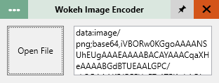

Wokeh mungkin nama yang aneh, aku sendiri ga tau kenapa pakai nama ini dari awal. Untuk kalian yang sudah pernah mengenal Wokeh, ini dia tampilan terbaru wokeh.

Wokeh mungkin nama yang aneh, aku sendiri ga tau kenapa pakai nama ini dari awal. Untuk kalian yang sudah pernah mengenal Wokeh, ini dia tampilan terbaru wokeh.
Jika kamu adalah blogger yang suka posting kode / menampilkan kode di postingan blog atau untuk memasang kode ke template blogger misa kode adsense, kalian bisa menggunakan html parser pada umumnya secara online.
Akan tetapi jika kamu ingin yang mode offline bisa coba yang satu ini. Tak hanya memparse kode html, tapi juga bisa mengembalikan kode html yang sudah diparse kembali ke kode html asli dan juga tambahan untuk mengkonversi gambar ke Base64.
Untuk sementara unduhan hanya tersedia di mode portable.